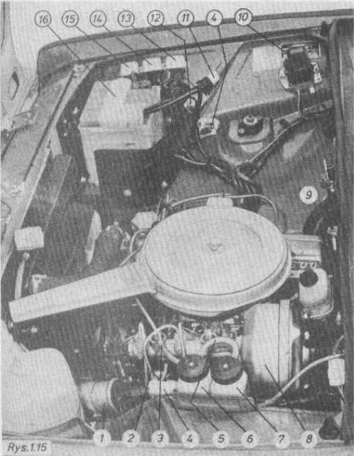

Polski Fiat 125p
Widok komory silnika (na podst. Budowa, eksploatacja i naprawa - Polski Fiat 125p, wyd. 1982)
| Lp | Nazwa |
|---|---|
| 1 | Cewka zapłonowa |
| 2 | Pompa hamulcowa |
| 3 | Przewód zasilający obwód hamulców tylnych |
| 4 | Lampka oświetlenia komory silnika |
| 5 | Przewód zasilający obwód hamulców przednich |
| 6 | Zbiornik płynu hamulcowego obwodu hamulców tylnych |
| 7 | Zbiornik płynu hamulcowego obwodu hamulców przednich |
| 8 | Urządzenie wspomagające hamulców |
| 9 | Włącznik oświetlenia komory silnika |
| 10 | Regulator napięcia |
| 11 | Przekaźnik sygnałów |
| 12 | Przekaźnik świateł mijania |
| 13 | Przekaźnik świateł drogowych |
| 14 | Przekaźnik ogrzewania tylnej szyby |
| 15 | Przekaźnik alternatora |
| 16 | Akumulator |